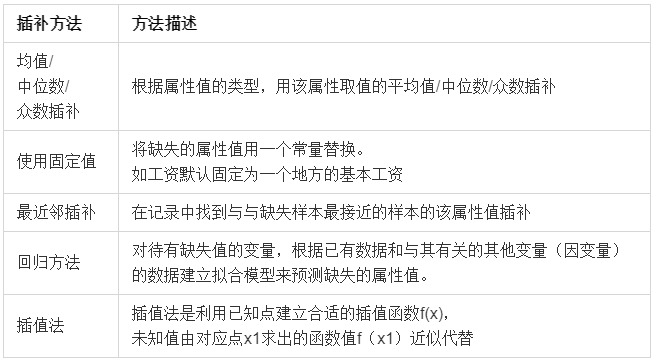
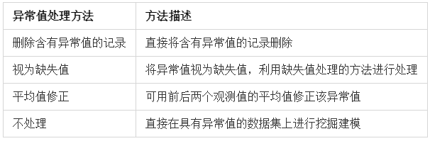
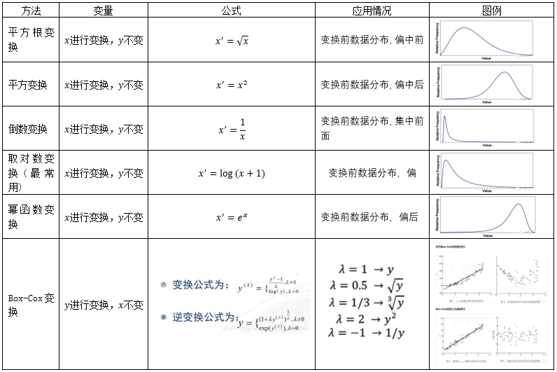
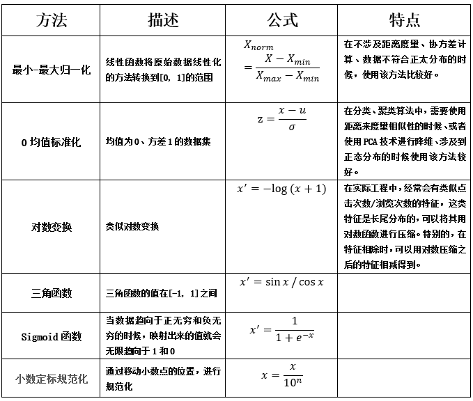
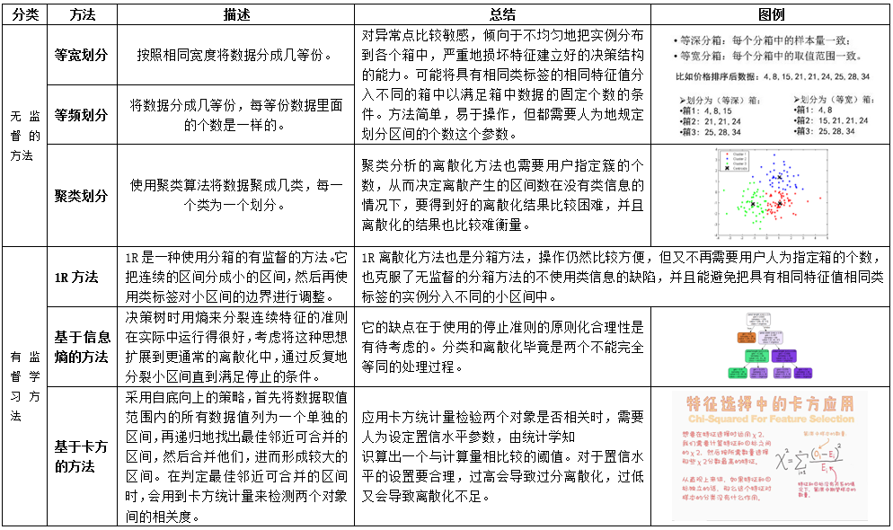
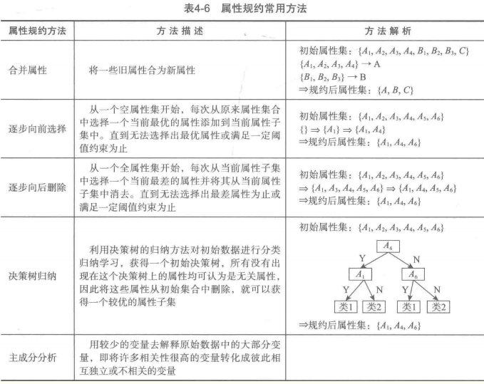

在数据挖掘中，海量的原始数据中存在着这大量不完整（有缺失值）、不一致、有异常的数据，严重影响到数据挖掘建模的执行效率，甚至可能导致挖掘结果的偏差，所以进行数据清洗就显得尤为重要，数据清洗完成后接着进行或者同时进行数据继承、转换、规约等一系列的处理，该过程就是数据预处理。
数据预处理一方面是要提高数据的质量，另一个方面是要让数据更好地适应特定挖掘技术或工具。统计发现，在数据挖掘的过程中，数据预处理工作量占到了整个过程的60%。
数据预处理框架图

数据清洗
数据清洗主要是删除原始数据集中的无关数据、重复数据，平滑噪声数据，筛选掉与挖掘主题无关的数据，处理缺失值、异常值等。
缺失值的处理
处理缺失值的方法可以分为三类：
- 删除记录
- 数据插补
- 不处理

插值法：
如果通过简单的删除小部分记录达到既定的目标，那么删除含有缺失值的记录的方法是最有效的。然而，这种方法却有很大的局限性。它是以减少历史数据来换取数据的完备，会造成资源的大量浪费，将丢弃了大量隐藏在这些记录中的信息。尤其是在数据集本来就包含很少纪录的情况下，删除少量记录可能会严重影响到分析结果的客观性和正确性。一些模型可以将缺失值视作一种特殊的取值，允许直接在含有缺失值的数据上进行建模。
异常值处理
在数据预处理时，异常值是否剔除，需视具体情况而定，因为有些异常值可能蕴含着有用的信息。

将含有异常值的记录直接删除的方法简单易行，但缺点也很明显，在观测值很少的情况下，这种删除会造成样本量不足，可能会改变变量的原有分布，从而造成分析结果的不准确。视为缺失值处理的好处是可以利用现有变量的信息，对异常值（缺失值）进行填补。
在很多情况下，要先分析异常值出现的可能原因，在判断异常值是否应该舍弃，如果是正确的数据，可以直接在具有异常值的数据集上进行挖掘建模。
数据集成
数据挖掘需要的数据往往分布在不同的数据源中，数据集成就是将多个数据源合并存放在一个一致的数据存储（数据仓库）中的过程。
在数据集成时，来自多个数据源的现实世界实体的表达形式是不一样的，有可能不匹配，要考虑实体识别问题和属性冗余问题，从而将数据源在最底层上加以转换、提炼和集成。
实体识别
实体识别是指从不同数据源识别出现实世界的实体，它的任务是统一不同源数据的矛盾之处，常见形式如下：
- 同名异义
数据源A中的属性ID和数据源中的属性ID分别描述的是学生编号和科目编号，即描述的是不同的实体。 - 异名同义
数据源A中dt和数据源B中的date都是描述日期的。 - 单位不统一
描述同一个实体分别用的是国际单位和中国传统的计量单位，检测和解决这些冲突就是实体识别的任务。
冗余属性识别
数据冗余情况：
- 同一属性多次出现。
- 同一属性命名不一致导致重复。
仔细整合不同数据源减少甚至避免数据冗余与不一致，从而提高数据挖掘的速度和质量。对于冗余属性要先分析，检测到后再将其删除。
有些冗余属性可以用相关分析检测。给定两个数值型A和B，根据其属性值，用相关系数度量一个属性在多大程度上蕴含另一个属性。
数据变换
数据变换主要是对数据进行规范化处理，将数据转化成“适当的”形式，以适用于挖掘任务及算法的需要。
- 方便置信区间分析或者可视化 (缩放数据， 对称分布)。
- 为了获取更容易解释的特征 (获取线性特征)。
- 降低数据的维度或者复杂度。
- 方便使用简单的回归模型。
简单的数据变换
简单的函数变换常用来将不具有正态分布非数据变换成具有正态分布的数据。在时间序列分析中，有时简单的对数变换或者差分运算就可以将非平稳序列转换成平稳序列。

规范化
数据规范化（归一化）处理是数据挖掘的一项基础工作。不同评价指标往往具有不同的量纲， 数之间的差别可能很大，不进行处理会影响到数据分析的结果。为了消除指标之间的量纲和取值范围差异的影响，需要进行标准化处理，将数据按照比例进行缩放，使之落入特定的区域，便于进行综合分析。
- 把数据映射到[0,1]的区间中。
- 把有量纲形式变成无量纲形式 。
常用的规范化方法

连续属性离散化
一些数据挖掘算法，特别是某些分类算法（ID3算法、Apripri算法等）、要求数据是分类属性形式。这样，常常需要将连续属性变换换成分类属性，即连续属性离散化。
- 离散化过程
连续属性的离散化就是在数据的取值范围内设定若干个离散的划分点，将取值范围划分为一些离散化的区间，最后用不同的符号或整数值代表落在每个子区间中的数据值。所以，离散化涉及两个任务：确定分类数以及如何将连续属性值映射到这些分类值。 - 常用的离散化方法

属性构造
在数据挖掘的过程中，为了提取更有用的信息，挖掘更深层次的模式，提高挖掘结果的精度，需要利用已有的属性集构造出新的属性，并加入到现有的属性集合中。
数据规约
在大数据集上进行复杂的数据分析和挖掘需要很长的时间，数据归约产生更小但保持原数据完整性的新数据集。在规约后的数据集上进行分析和挖掘将更有效率。
数据规约的意义：
- 降低无效、错误数据对建模的影响，提高建模的准确性。
- 少量且代表性的数据将大幅缩减数据挖掘所需的时间。
- 降低存储数据的成本
属性规约
属性规约通过属性合并来创建新属性维数，或者直接通过删除不相关（维）来减少数据维数，从而提高数据挖掘的效率、降低计算成本。属性规约的目标是寻找出最小的属性子集并确保新数据子集的概率分布尽可能地接近原来数据集的概率分布。

数值规约
数值规约值通过选择替代的、较少的数据来减少数据量，包括有参数和无参数方法两类。有参数方法是使用一个模型来评估数据，只需存放参数，而不需要存放实际数据，例如回归和对数线性模型。无参数方法就需要存放实际数据。
- 直方图
直方图使用分箱来近似数据分布，是一种流行的数据归约形式。 - 聚类
聚类技术将数据元组（即记录，数据表中的一行）视为对象。它将对象划分为簇，使一个簇中的对象相互“相似”，而与其他簇中的对象“相异”。在数据规约中，用数据的簇替换实际数据。该技术的有效性依赖于簇的定义是否符合数据的分布性质。 - 抽样
抽样也是一种数据规约技术，它用比原始数据小得多的随机样本（子集）表示原始数据集。假定原始数据集D包含N个元组，可以采用抽样方法对D进行抽样。- s个样本无放回简单随机抽样
- s个样本有放回简单随机抽样
- 聚类抽样
- 分层抽样
- 参数回归
简单线性模型和对数线性模型可以用来近似描述给定的数据。线性模型对数据建模，使之拟合一条直线。